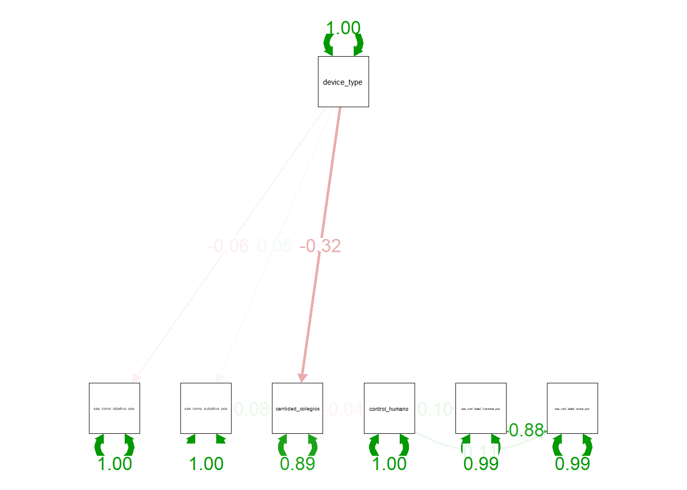

lavaan 0.6-21 ended normally after 16 iterations
Estimator ML
Optimization method NLMINB
Number of model parameters 15
Number of observations 514
Model Test User Model:
Test statistic 488.011
Degrees of freedom 12
P-value (Chi-square) 0.000
Parameter Estimates:
Standard errors Standard
Information Expected
Information saturated (h1) model Structured
Regressions:
Estimate Std.Err z-value P(>|z|) Std.lv
sae_comp_objetiva_pos ~
device_type -0.188 0.134 -1.400 0.161 -0.188
sae_comp_subjetiva_pos ~
device_type 0.087 0.083 1.058 0.290 0.087
cantidad_colegios ~
device_type -2.124 0.275 -7.728 0.000 -2.124
sa_cmp_bjtv_ps -0.018 0.090 -0.197 0.844 -0.018
s_cmp_sbjtv_ps 0.271 0.146 1.855 0.064 0.271
control_humano ~
cantidad_colgs -0.007 0.007 -1.009 0.313 -0.007
sae_conf_belief_funcional_pos ~
control_humano 0.174 0.080 2.176 0.030 0.174
sae_conf_belief_moral_pos ~
control_humano 0.204 0.083 2.457 0.014 0.204
Std.all
-0.062
0.047
-0.323
-0.008
0.077
-0.044
0.096
0.108
Covariances:
Estimate Std.Err z-value P(>|z|) Std.lv
.sae_conf_belief_funcional_pos ~~
.s_cnf_blf_mrl_ 0.752 0.050 14.972 0.000 0.752
Std.all
0.879
Variances:
Estimate Std.Err z-value P(>|z|) Std.lv Std.all
.sa_cmp_bjtv_ps 2.317 0.145 16.031 0.000 2.317 0.996
.s_cmp_sbjtv_ps 0.879 0.055 16.031 0.000 0.879 0.998
.cantidad_colgs 9.652 0.602 16.031 0.000 9.652 0.892
.control_humano 0.249 0.016 16.031 0.000 0.249 0.998
.s_cnf_blf_fnc_ 0.824 0.051 16.031 0.000 0.824 0.991
.s_cnf_blf_mrl_ 0.887 0.055 16.031 0.000 0.887 0.988Análisis de sendero Device_type
¿El tipo de dispositivo afectó provoco una comprensión distinta que produjo comportamientos distintos al considerar la intervención de control humano?

[1] 4.087549[1] 4.340467| Functional trust MDMT (Ex ante) | Functional trust MDMT (Ex ante) | Moral trust MDMT (Ex ante) | Moral trust MDMT (Ex ante) | Functional Trust McKnight (Ex ante) | Functional Trust McKnight (Ex ante) | Moral Trust McKnight (Ex ante) | Moral Trust McKnight (Ex ante) | |
| Predictors | Estimates | Estimates | Estimates | Estimates | Estimates | Estimates | Estimates | Estimates |
| Intercept | 2.20 *** (0.11) |
1.07 *** (0.12) |
2.26 *** (0.11) |
1.15 *** (0.12) |
2.28 *** (0.10) |
1.32 *** (0.11) |
2.26 *** (0.10) |
1.31 *** (0.12) |
| Objective Knowledge (Ex ante) | 0.24 *** (0.03) |
0.08 ** (0.02) |
0.27 *** (0.03) |
0.11 *** (0.02) |
0.23 *** (0.02) |
0.09 *** (0.02) |
0.23 *** (0.02) |
0.10 *** (0.02) |
| Subjective Knowledge (Ex ante) | 0.56 *** (0.04) |
0.55 *** (0.04) |
0.48 *** (0.04) |
0.47 *** (0.04) |
||||
| Observations | 514 | 514 | 514 | 514 | 514 | 514 | 514 | 514 |
| R2 / R2 adjusted | 0.149 / 0.148 | 0.407 / 0.404 | 0.179 / 0.178 | 0.424 / 0.422 | 0.157 / 0.155 | 0.374 / 0.372 | 0.159 / 0.157 | 0.368 / 0.365 |
| * p<0.05 ** p<0.01 *** p<0.001 | ||||||||
Comprensión - Trust Ex pos SAE
| cantidad colegios | cantidad colegios | cantidad colegios | cantidad colegios | cantidad colegios | cantidad colegios | |
| Predictors | Estimates | Estimates | Estimates | Estimates | Estimates | Estimates |
| Intercept | 4.77 *** (0.42) |
4.94 *** (0.45) |
4.81 *** (0.44) |
4.83 *** (0.42) |
5.05 *** (0.47) |
5.05 *** (0.47) |
| Objective Knowledge (Ex post) | -0.06 (0.10) |
-0.07 (0.10) |
-0.06 (0.10) |
-0.04 (0.10) |
-0.05 (0.10) |
-0.05 (0.10) |
| Control Humano | -0.30 (0.29) |
-0.30 (0.29) |
-0.30 (0.29) |
|||
| Disclosure | -0.09 (0.29) |
-0.08 (0.29) |
-0.08 (0.29) |
|||
| Situational Information | -0.27 (0.30) |
-0.27 (0.30) |
-0.27 (0.30) |
|||
| Observations | 514 | 514 | 514 | 514 | 514 | 514 |
| R2 / R2 adjusted | 0.001 / -0.001 | 0.003 / -0.001 | 0.001 / -0.003 | 0.002 / -0.001 | 0.005 / -0.003 | 0.005 / -0.003 |
| * p<0.05 ** p<0.01 *** p<0.001 | ||||||
| cantidad colegios | cantidad colegios | cantidad colegios | cantidad colegios | cantidad colegios | |
| Predictors | Estimates | Estimates | Estimates | Estimates | Estimates |
| (Intercept) | 4.65 *** (0.55) |
4.50 *** (0.65) |
5.18 *** (0.54) |
4.49 *** (0.70) |
4.43 *** (0.70) |
| sae_comp_objetiva_pre | -0.08 (0.11) |
-0.04 (0.14) |
-0.12 (0.13) |
-0.08 (0.11) |
-0.08 (0.11) |
| sae_comp_subjetiva_pre | 0.11 (0.17) |
0.11 (0.17) |
0.16 (0.22) |
0.19 (0.23) |
|
| disclosure | -0.10 (0.29) |
0.24 (0.84) |
-0.09 (0.29) |
0.25 (1.01) |
-0.11 (0.29) |
| inf_situacional | -0.28 (0.30) |
-0.28 (0.30) |
-1.05 (0.87) |
-0.28 (0.30) |
0.24 (1.02) |
| sae_comp_objetiva_pre:disclosure | -0.08 (0.19) |
||||
| sae_comp_objetiva_pre:inf_situacional | 0.19 (0.20) |
||||
| disclosure:sae_comp_subjetiva_pre | -0.11 (0.30) |
||||
| inf_situacional:sae_comp_subjetiva_pre | -0.16 (0.30) |
||||
| Observations | 514 | 514 | 514 | 514 | 514 |
| R2 / R2 adjusted | 0.004 / -0.004 | 0.004 / -0.006 | 0.004 / -0.003 | 0.004 / -0.006 | 0.004 / -0.006 |
| * p<0.05 ** p<0.01 *** p<0.001 | |||||
| cantidad colegios | cantidad colegios | |
| Predictors | Estimates | Estimates |
| (Intercept) | 6.33 *** (0.92) |
6.70 *** (1.22) |
| sae comp objetiva pos | 0.05 (0.11) |
0.05 (0.11) |
| sae comp subjetiva pos | 0.23 (0.17) |
0.22 (0.18) |
| control humano | -0.11 (0.30) |
-0.78 (1.46) |
| x402b repostulacion [Incluiría más escuelas] |
-3.37 *** (0.76) |
-3.77 ** (1.17) |
| x402b repostulacion [Mantengo mi postulación] |
-2.41 ** (0.75) |
-2.76 * (1.11) |
| x402b repostulacion [No estoy seguro/a de qué sería más conveniente] |
-2.75 ** (0.91) |
-3.24 * (1.26) |
| x402b repostulacion [Reordenaría las preferencias] |
-2.80 ** (0.87) |
-3.15 * (1.27) |
| control humano × x402b repostulacion [Incluiría más escuelas] |
0.71 (1.55) |
|
| control humano × x402b repostulacion [Mantengo mi postulación] |
0.64 (1.52) |
|
| control humano × x402b repostulacion [No estoy seguro/a de qué sería más conveniente] |
1.14 (1.89) |
|
| control humano × x402b repostulacion [Reordenaría las preferencias] |
0.63 (1.76) |
|
| Observations | 514 | 514 |
| R2 / R2 adjusted | 0.050 / 0.037 | 0.050 / 0.030 |
| * p<0.05 ** p<0.01 *** p<0.001 | ||
| cantidad colegios | cantidad colegios | |
| Predictors | Estimates | Estimates |
| (Intercept) | 3.92 *** (0.60) |
3.94 *** (0.62) |
| sae comp objetiva pos | 0.05 (0.11) |
0.05 (0.11) |
| sae comp subjetiva pos | 0.23 (0.17) |
0.22 (0.18) |
| control humano | -0.11 (0.30) |
-0.13 (0.43) |
| x402b repostulacion [Eliminaría una o más escuelas] |
2.41 ** (0.75) |
2.76 * (1.11) |
| x402b repostulacion [Incluiría más escuelas] |
-0.97 ** (0.33) |
-1.01 (0.52) |
| x402b repostulacion [No estoy seguro/a de qué sería más conveniente] |
-0.34 (0.60) |
-0.48 (0.71) |
| x402b repostulacion [Reordenaría las preferencias] |
-0.39 (0.53) |
-0.38 (0.73) |
| control humano × x402b repostulacion [Eliminaría una o más escuelas] |
-0.64 (1.52) |
|
| control humano × x402b repostulacion [Incluiría más escuelas] |
0.07 (0.69) |
|
| control humano × x402b repostulacion [No estoy seguro/a de qué sería más conveniente] |
0.49 (1.28) |
|
| control humano × x402b repostulacion [Reordenaría las preferencias] |
-0.02 (1.07) |
|
| Observations | 514 | 514 |
| R2 / R2 adjusted | 0.050 / 0.037 | 0.050 / 0.030 |
| * p<0.05 ** p<0.01 *** p<0.001 | ||